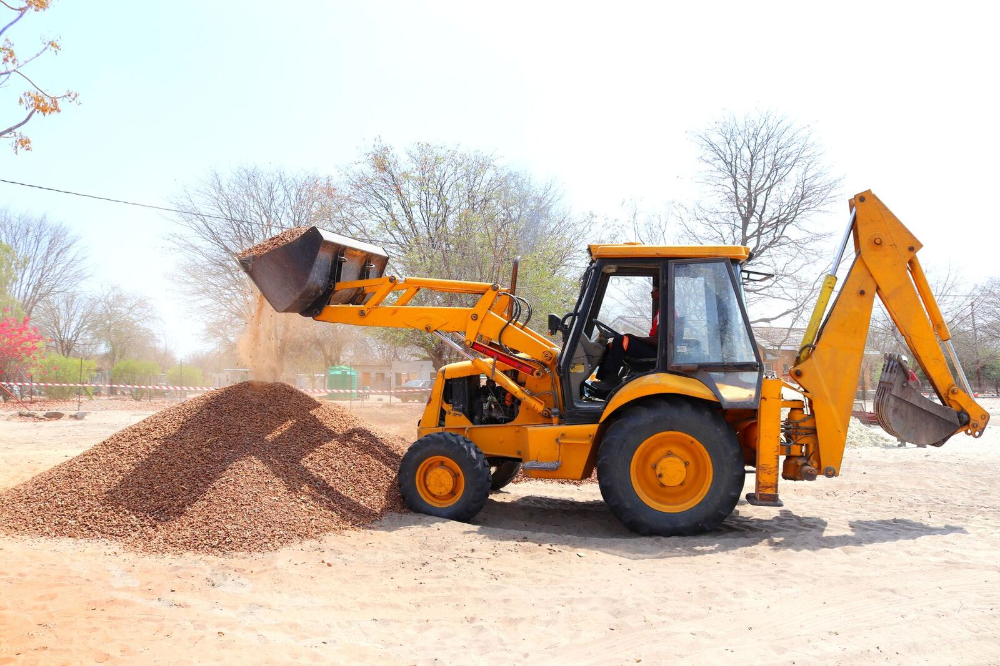
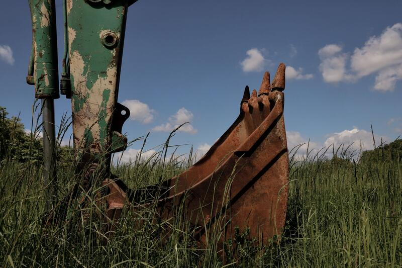
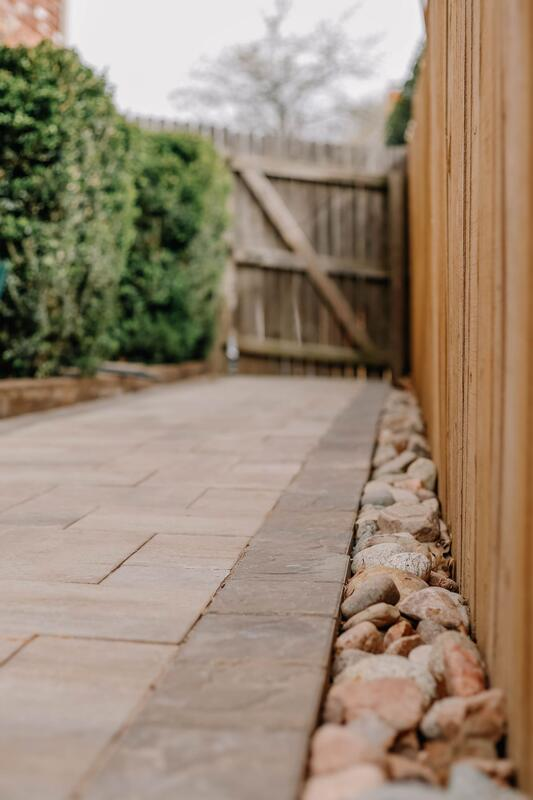
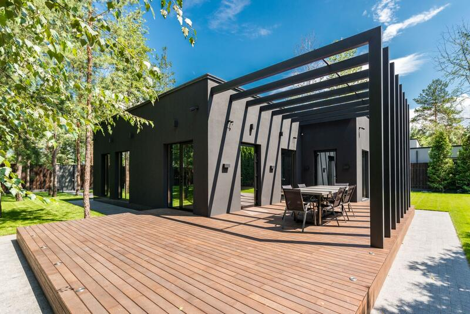
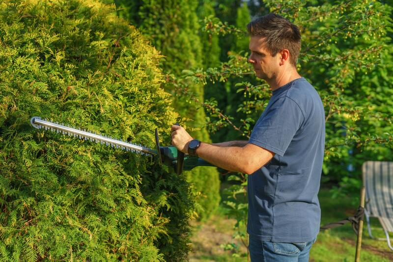

Markarbeten
Schaktning, grundläggning och gjutning, återfyllning och packning, stenröjning samt transport och leverans av matjord, grus och makadam.
Läs mer →
Start / Verksamhet
Kungsbacka Mark & Trädgård AB utför mark-, bygg- och trädgårdsentreprenader i Varberg, Kungsbacka och Göteborg med omnejd. Verksamheten är organiserad i fem områden som kan handlas upp var för sig eller samlat i en entreprenad.
Schaktning, grundläggning och gjutning, återfyllning och packning, stenröjning samt transport och leverans av matjord, grus och makadam.
Läs mer →
Dränering av husgrund och tomt – schakt, rörläggning, makadam och återfyllning.
Läs mer →
Plattläggning av uppfarter, parkeringsytor, gångar och uteplatser samt nya murar och upprustning av befintliga.
Läs mer →
Altanbyggen, garage, tillbyggnader och renoveringar utförda av egna snickare.
Läs mer →
Trädgårdsplanering, rabatter, gräsmattor, slyröjning, häckklippning och skötsel.
Läs mer →Flera moment i samma projekt? Vi samordnar allt i egen regi – en kontakt och en tidplan.
Begär offertHur kan vi hjälpa dig med ditt projekt?
Kontakta osseller ring direkt: 0735-23 53 16